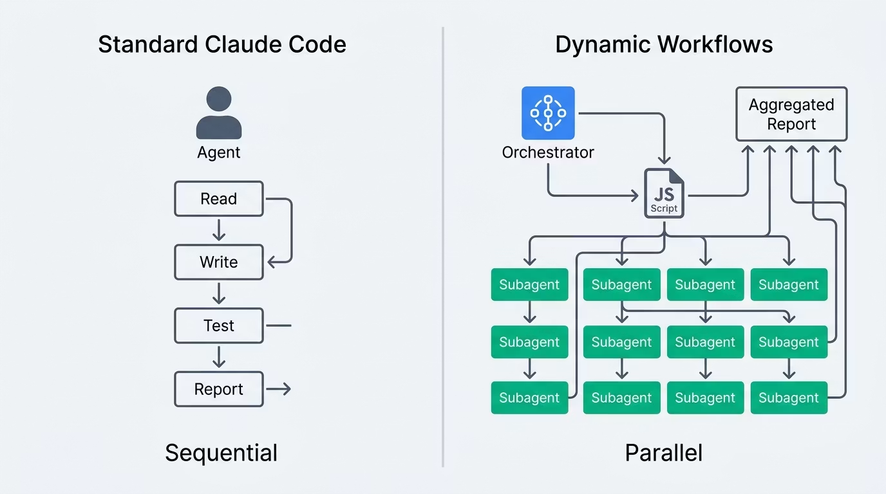
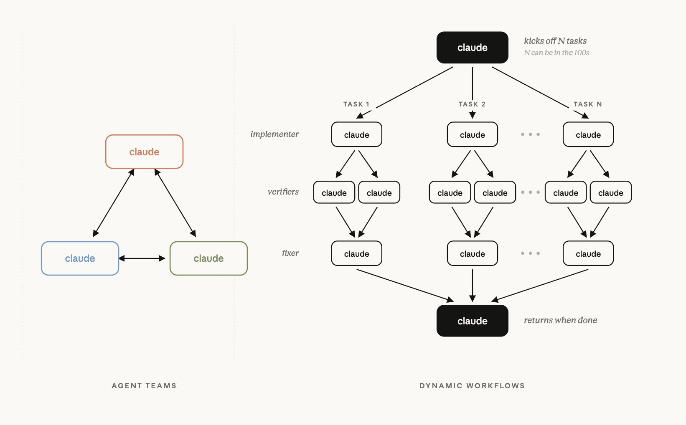
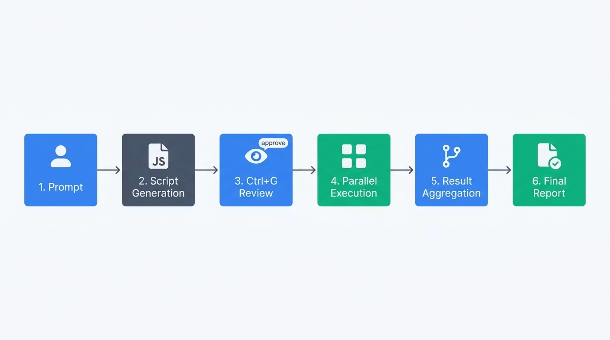
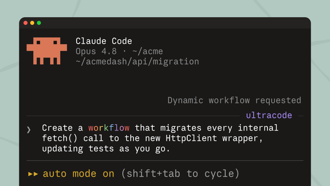

7回复
67转帖
279喜欢
678书签
18.5万观看
一句话判断：Claude Code 现在能即时写出属于自己的 harness，为手头任务量身定制——动态编排数十到数百个并行 subagents，在结果送到你面前之前先自行检查一遍。它是 goal 的加强版，可能是 skill 发明以来最好的功能。
译者 @实践哥MinLi · 原文作者 @Thariq（Anthropic 核心员工）
⚠ 重要前提：workflow 会消耗更多 token，更适合 复杂、高价值的任务；常规编码不必硬上。
01
核心原理：dynamic workflow 是什么
workflow 会执行 JavaScript 文件，文件里包含用于生成和协调 subagents 的特殊函数。
导读（@实践哥批注）：好文值得读。workflow 可能是 skill 发明以来最好的发明，是 goal 的加强版，非常值得学习。原文作者 Thariq @trq212 是 Anthropic 核心员工，经常分享 Claude Code 技巧。
1. 示例提示词
8 个例子直观感受
2. 原理
本质是一段脚本
3. 为什么需要
三种失效模式
4. 动态 vs 静态
定制 vs 通用
5. 六种模式
可复用套路
6. 九大场景
落地实践
7. 何时不用
常规编码不必
8. 构建技巧
/goal + /loop
9. 探索起点
新能力延伸
02
为什么默认 harness 会失效：三种失效模式
默认 harness 在单个 context window 内完成规划与执行，碰到复杂任务会出问题。
失效 1
智能体偷懒
面对复杂多部分任务，Claude 会过早停止，只做完一部分就宣布完成。比如 50 项安全审查只处理了其中 35 项。
失效 2
自我偏好偏差
被要求对照 rubric 验证或评判结果时，Claude 会偏袒自己得出的结论——自己做的题自己批。
失效 3
目标漂移
在多轮交互中保真度逐渐流失，每一次总结都会丢掉细节，包括边缘情况的需求和各种约束。context window 被信息污染。
03
六种可复用模式：workflow 编排套路
这些模式可以直接照抄，也可以组合使用。
P1 · 扇出并综合
把任务拆成许多更小的步骤，每个步骤跑一个 agent，再综合所有结果。综合这一步充当 barrier，等所有扇出完成后合并结构化输出。
P2 · 对抗式验证
每生成一个 agent，就再跑一个单独 agent，以对抗姿态对照 rubric 或判定准则来验证它的输出。
P3 · 分类并执行
由 classifier agent 判断任务类型，据此路由到不同的 agent 或行为；也可以在任务完成时确定输出的分类。
P4 · 生成并筛选
先就某个主题生成多个想法，再按 rubric 或验证来筛选，去重后只留下质量最高、经过检验的那些。
P5 · 锦标赛
让 N 个 agent 用不同方法在同一个任务上互相竞争，由成对评判的 agent 决出胜者，直到只剩一个。
P6 · 循环至完成
对工作量未知的任务，持续生成 agent 直到满足停止条件（不再有新发现、日志里不再有错误），而不是采用固定遍数。
📷
配图说明：工作流架构与实操界面
来源：CSDN 技术博客 · CC 4.0 BY-SA 协议

⚠ 图片加载失败，请检查网络
图1：标准 Claude Code vs Dynamic Workflows
左：串行单智能体（规划+执行全在 context 里）
右：并行多智能体（orchestrator 生成 JS 脚本，子 agents 独立运行）

⚠ 图片加载失败
图2：多智能体编排架构
orchestrator 生成编排脚本 → 最多 16 个 agents 并行 → 结果汇聚 → 最终报告

⚠ 图片加载失败
图3：Analysis Tool 工作流
Prompt → Script Generation → Ctrl+G 审核 → 并行执行 → 聚合结果 → 最终报告

⚠ 图片加载失败
图4：Claude Code 动态工作流实操界面
Opus 4.8 + Claude Code · 触发动态工作流自动迁移 fetch() → HttpClient wrapper
04
九大应用场景：落地实践
从迁移到研究，从验证到分类，覆盖复杂任务全链路。
🔄
迁移与重构
Bun 把 Zig 重写成 Rust 时用了 workflow。把任务拆成串行步骤（调用点、失败测试、模块），为每一处修复在 worktree 里生成 subagents，做对抗式审查再合并。
🔬
深度研究
Claude Code 的 /deep-research 就用了 workflow：扇出网络搜索 → 抓取来源 → 对抗式验证论断 → 综合出带引用的报告。也可用于非网络类研究（汇编 Slack 报告、探索代码库功能）。
✅
深度验证
生成一个 workflow：一个 agent 负责识别各项论断，subagents 逐一核查，再由 verifier agent 确保来源质量（每条事实都要标注出处）。
📊
排序
按缺陷严重程度给工单排序时，单个提示给 1000+ 行排名会拉低质量、撑爆 context。可以用锦标赛成对比较流水线，或先分桶排名再合并。
🧠
记忆与规则遵循
当 Claude 即便把规则写进 CLAUDE.md 仍会漏掉某些规则时，创建带 rule verifier 的 workflow：一条规则配一个 verifier，再让 skeptic 人设审查防止误报。
🏷️
大规模分类处理
triage workflow 会对条目分类、跟现有记录去重，然后采取行动。用 quarantine 模式：读取不受信任公开内容的 agent 被禁止高权限操作，配合 /loop 持续运行。
🎨
探索与品味
设计或命名这类依赖品味的决策，能从 rubric 中受益。让 Claude 探索解法，同时让 review agent 依据好方案的 rubric 评判，满足标准即告完成。
📈
评估
轻量级 eval：在 worktree 里生成若干独立 agent，再生成 comparison agent 对照 rubric 给输出做比较和打分。可用于对照特定标准来评估和改进技能。
🧭
模型与智能路由
创建针对任务调校过的 classifier agent，由它决定用哪个模型。解释鉴权模块怎么工作取决于文件数量和代码库形态，classifier 会先调研再根据复杂度路由到 Sonnet 或 Opus。
05
何时不该使用 workflow：常规编码不必硬上
workflow 是新能力，但不是每个任务都需要它。
原文警告：workflow 可能消耗多得多的 token。要有创造性地用它，把 Claude Code 推到常规用法之外。而对常规编码任务，先掂量一下是否真的需要额外算力；大多数传统编码并不需要五个 reviewer。
06
构建 workflow 的关键技巧
让 Claude 以比默认方式更原生的姿态解决问题。
1
提示词要详细：运用具体技巧、把提示写详细，效果最好。不只用于大型任务，也可以提示快速 workflow（如对某个假设做一次快速对抗式审查）。
2
结合 /goal 和 /loop：对可重复的 workflow（分类、研究、验证），用 /loop 按固定间隔运行，用 /goal 设硬性完成要求。
3
设 token 预算：在提示里写明上限（例如只用 10k token），明确限制任务用量，避免成本失控。
4
保存与分享：workflow 菜单里按 S 保存。签入 ~/.claude/workflows，或通过技能来分发。把 JS workflow 文件放进技能文件夹并在 SKILL.md 里引用。
07
适合谁先看，谁最好别把它想窄了
workflow 是 skill 发明以来最好的功能，适合想用 Claude Code 解决复杂任务的人。
✓ 适合
Claude Code 重度用户：想让 AI 解决超出常规编码的复杂任务
AI 工程师：研究 agent teams、代码审查、安全分析
大型代码库维护者：需要并行审查、重构、迁移
技术写作者：深度研究、长篇报告、论断核实
✗ 不适合
普通 CRUD 开发：简单增删改查不需要并行 subagents
单次小任务：三五分钟能搞定的事不必开 workflow
极度 token 敏感场景：成本优先时先评估 ROI
最终判断：dynamic workflow 是 Claude Code 自 skill 以来最重要的功能进化——它让 Claude 能即时写出属于自己的 harness，为手头任务量身定制，而不是在通用 harness 框架下勉强发挥。
workflow 的核心价值：编排彼此独立、各自拥有独立 context window、目标聚焦又互相隔离的 subagents，从根本上解决了默认 harness 在复杂任务中的三种失效模式。
但记住：workflow 消耗更多 token，不是万能药。最好的用法是：对复杂高价值任务动用它，对常规编码保持默认 harness。
来源：x.com/i/status/2062068646902689895 · @实践哥MinLi（译）· @Thariq（原文，Anthropic）